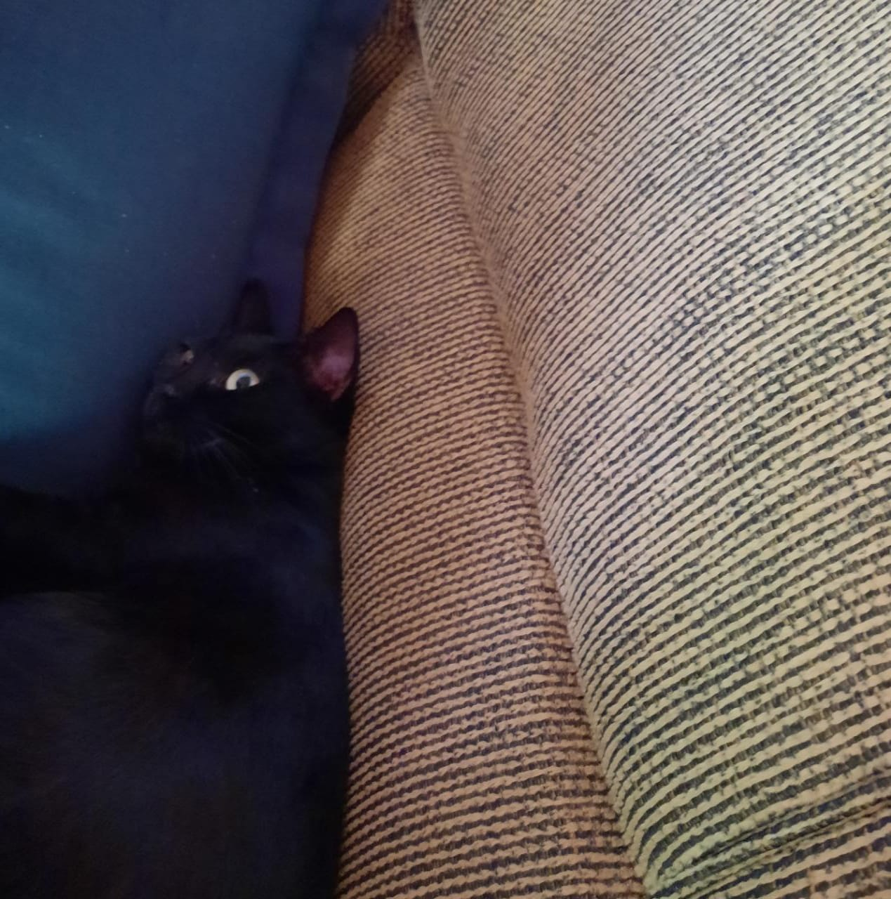

Sobre mim

Olá, me chamo Jorge Harrisonn, sou capixaba, tenho 17 anos.
Entrei no WebDev para recuperar prática com desenvolvimento web, além de adquirir novos conhecimentos.
O que aprendi no WebDev?
Introdução
- Na primeira aula, fomos apresentados às tecnologias HTML, CSS e JS
- Fomos apresentados ao CodePen (uma live editor de HTML)
- Conhecemos o Git
CSS
- Fomos apresentados à CSS que permite configurar o estilo da página HTML.
- Conhecemos os seletores que permitem escolher quais elementos queremos modificar
Position
- Na aula conhecemos um pouco sobre a distribuição dos elementos na tela.
- Fomos apresentados às positions como absolute, relative, fixed... que nos permitem definir a posição dos elementos.
- Conhecemos a flexbox que permite distribuir os elementos dentro de um contêiner de forma "dinâmica".
Responsividade
- Fomos apresentados ao conceito de responsividade.
- Se trata dos ajustes que devem ser feitos a uma página web para que confira maior compatibilidade entre os diferentes tipos de dispositivos.
JavaScript
- Fomos apresentados ao JavaScript, a linguagem de programação interpretada usada nas páginas HTML
- É uma linguagem de programação que é utilizada para criar interatividade nas páginas HTML. Conhecemos variáveis, funções, etc.